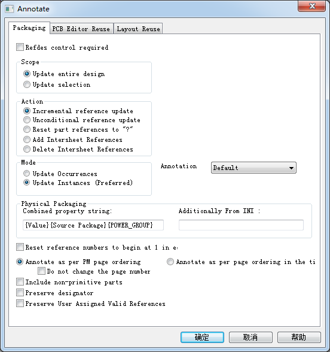

20160324
Tools
Annotate(自动排序)

Scope：
Update entire design：更新整个设计
Update selection：更新选择的部分
Action：
Incremental reference update：在现有的基础上进行增加排序 只对电路图中没有确定编号的元器件（即元器件编号中带有问号“？”的元器件）自动进行编号。
Unconditional reference update：无条件进行排序 不管电路图中的元器件是否有确定的编号，若选中本选项，则对电路图中所有元器件重新进行编号。
Reset part reference to “?”：把所有的序号都变成“？” 将电路图中元器件编号中的数字部分均改为问号“？”，字母不变。
Add Intersheet References：在分页图纸间的端口的序号加上图纸编号 在电路图中的端口连接符Off-Page Connector将标出与其相连的电路图纸编号
Delete Intersheet References：删除分页图纸间的端口的序号上的图纸编号 删除掉位于端口连接符旁边表示与其相连的电路图纸编号说明。
Combined property：把对话框中的属性相结合
Reset reference numbers to begin at 1 each page：编号时每张图纸都从1开始
Do not change the page number：不要改变图纸编号
Back Annotate...
Update Properties...自动更新器件或网络的属性（自已定义封装）
Use case insensitive compares：不考虑器件的灵敏度
Convert the update property to uppercase：把更新的属性转换成大写字母
Unconditionally update the property：无条件更新属性
Do not change updated properties visibility：不改变器件更新的属性的可见属性
Make the updated property visible：使器件更新的属性可见
Make the updated property invisible：使器件更新的属性不可见
Create a report file：产生报告文件
Property Update：要更新的属性文件
Test Bench
Part Manager
Design Rules Check(设计规则检查)
Design Rules Options(设计规则选项)
")
Scope
Check entire design : DRC检查整个设计
Check Selection : DRC检查选择的部分
Mode :
Use occurrences 选择所有事件
Use instances(preferred)使用当前实体（建议）
（所谓实体是指放在绘图页内的元件符号，而事件指的是在绘图页内同一实体出现多次的实体电路。
例如，在复杂层次电路图中，某个子方块电路重复使用了3次，就形成了3次事件；不过子方块电路内本身的元件却是实体）
Action
Check design rules 进行DRC检查
Delete existing DRC marker 删除DRC检测标志 运行此项后并不进行实质的DRC检验，只是删除电路图中已有的DRC标示符（marker）
Create DRC markers for warnings : 进行DRC检测若发现错误，在错误之处放置警告标志
Preserve waived DRC 保留已经豁免的DRC
Design Rules
Run Electrical Rules 电气规则检查
Run Physical Rules 物理规则检查
Electrical Rules
")
Electrical Rules :
Check off-page connector connection : 检测分页图纸间接口的连接性 检验不同页面电路之间的off-page connector（端口连接符）名称是否相匹配
Check hierarchical port connection : 检测阶层端口的连接性
Check SDT compatibility : 检测对于SDT文件的兼容性 此项不用
Reports
Report all net name : 报告所有网络名称
Report off-grid objects : 报告未放置在格点上的器件 检查电路图中是否存在元器件的引出端未位于电路图纸网格点的情况
Report hierarchical ports and off-page connection : 报告阶层端口和分页图纸间接口的连接符
Report Misleading Tap Connection : 报告易误解的连接
Physical Rules
")
Reports
Report visible unconnected power : 检测未连接的可见电源
Report unused part packag
Report invalid Refdes : 报告无效的参考编号
Report identical part references : 报告是否有重复的器件序号 检验是否存在不同的元器件具有相同元器件编号的情况。
ERCMatrix

Create Differential Pair...
Cross Reference...
产生交互参考报表 （ Tools>Cross Reference…）
Sort output by part value, then by reference：先报告Value后报告reference，并按value排序 报表中元器件的排列按元器件值的字母顺序。
Sort output by reference designator, then by value：先报告reference后报告Value，并按reference排序 按元器件编号的字母顺序确定报表中元器件排列方式
Report the X and Y coordinates of all parts：报告器件的X、Y坐标
Report unused parts in multiple part packages：报告一个封装里没有使用的器件 对于包括有多个器件单元的集成电路封装输出报表中将列出单个封装内哪几个单元在电路中没有使用。
InterSheet Reference...
Bill of Materials
Line Item Definition : 定义材料清单的内容
Header
Item\tQuantity\tReference\tPart
序号 -- 用量 -- 位号 -- 值
Combined property string
{Item}\t{Quantity}\t{Reference}\t{Value}
Place each part entry on a separate line : 材料清单中每个器件信息占一行
Combined property string 这个框框里填写的就是下面的器件所具有的属性的名称。
也就是说，如果你想导出Part Number这项参数，那么你就需要把{PART_NUMBER}这串字符填写到Combined property string中；
如果你想导出Description这项参数，就需要把{Description}这串字符填写到Combined property string中，
不同的字符串用\t隔开就OK了。 相信到现在，你应该知道如何随心所欲到处自己想要的参数了吧。
例如采用下面的导出设置：
Header: Item\tQuantity\tValue\tPart Number\tReference\tDescription\tDNS\tVendor\tVendor Part Number
Combined property string:
{Item}\t{Quantity}\t{Value}\t{PART_NUMBER}\t{Part Reference}\t{Description}\t{DNS}\t{Vendor}\t{Vendor P/N}
就可以导出数量，元件值，料号，元件编号，元件描述，是否为 DNS，厂商，厂商料号这些信息
常用的是如下方式：
{Item}\t{Quantity}\t{Reference}\t{Value}\t{pcb footprint}\t{Quantity}\t\t
Tools > Bill of Materials...
Header
Item\tQuantity\tReference\tPart\tfootprint
Combined property string
{Item}\t{Quantity}\t{Reference}\t{Value}\t{pcb footprint}
Include File：在材料清单中是否加入其他文件
Export Properties...
Import Properties
Generate Part
Export FPGA...
Split Part
Assign Power Pins...
Associate PSpice Model...
Sync NetGroup...
Customize...
Board Simulation...